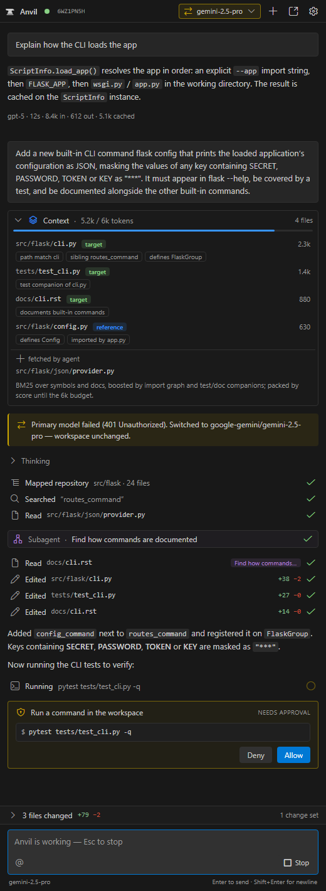

TrueForge runs the agent loop; Anvil adds the editor side: context it can explain, per-hunk review before anything reaches disk, and failover to another model.
Measured on pallets/flask 3.1.3 (226 files, ~295k tokens) with npm run bench and node scripts/bench-edits.ts. Data in docs/benchmarks/.
Anvil is a new extension, not a fork. Every agent turn runs inside TrueForge; the extension creates sessions, streams turns, answers approvals, and serves editor tools to the agent over a localhost MCP server. Providers are configured in TrueForge; the extension stores only an ordered list of model names and never calls a model itself.
run_command gets Allow/Deny cards instead.git status clean.Each panel conversation is a TrueForge session built from agents/anvil-agent.json; each inline edit (Ctrl+Alt+K) gets a short-lived session from anvil-inline.json. The model is filled in at run time, so sessions.update can switch models without losing history.
The MCP server binds a random loopback port with a bearer token that rotates on every start. Read tools are annotated readOnlyHint: true; propose_edit and create_file are not, and run_command is destructiveHint: true. The spec also lists the three write tools in require_approval_for_tools.
Subagents are on, so exploration can be delegated; a subagent shows up as a thread in the panel and in the TrueForge Sessions UI. Compaction triggers at 60k input tokens. Tools are preloaded rather than deferred, because small models handle deferred meta-tools poorly.
Stop cancels the TrueForge turn, discards pending hunks and denies pending approvals. Paused turns resume with subscribeToTurn(afterEventId), so an approval is never answered twice.
Before each turn Anvil ranks every tracked file and sends a context pack capped at 6,000 tokens: a candidates table (path, role, reason), a repository map of signatures, and code slices around the strongest matches. Signals, all computed locally:
@file / @symbol mentions, which are pinned; files open in the editorroutes_command and shell_commandcli.py → tests/test_cli.py, docs/cli.rst)No embeddings, since an embedding API would be a direct provider call. The agent fetches anything else just in time; repeat reads of an unchanged range return a short stub and tool output is capped. The pack averaged 4,182 tokens (max 5,585) against 38,390 for the same top eight files sent whole.
| # | File | Role | Reasons shown on the Context card |
|---|---|---|---|
| 1 | src/flask/cli.py ● | target | defines load_app; path match “cli”; defines sibling commands run_command, shell_command, routes_command; imported by test_cli.py |
| 2 | docs/cli.rst ● | target | docs companion of cli.py; path match “cli” |
| 3 | tests/test_cli.py ● | target | test companion of cli.py; path match “cli” |
| 4 | docs/config.rst | reference | path match “config”; term match secret, configuration, load |
| 5 | src/flask/config.py | reference | path match “config”; term match configuration, load, json |
| 6 | tests/test_config.py | reference | path match “config”; term match secret, json, key |
Ranker output for the Task B prompt. ● ground-truth file. The prompt says “config” several times, but the config files only match on path and score far below cli.py (3.99 vs 8.69), so they are labelled reference. Term-match reasons omitted for rows 1–3. In the benchmark the same three files rank first (recall@3: Anvil 1, BM25 0, path-only 0).

run_command approval.Models rarely reproduce old_string byte for byte. applyReplacement tries four stages in order: exact unique match, line-trimmed whitespace-insensitive, indentation-normalised, then fuzzy (single best candidate at ≥ 0.85 similarity). On failure it returns the closest lines as a hint so the model can retry.
Test corpus: 30 function blocks from Flask's src/flask/*.py, each perturbed the way models get it wrong. A plain search-and-replace lands 15.2% of the 198 edits; the cascade lands 97.5%, and every one of those is byte-exact.
The fuzzy stage is strict on purpose: 4+ non-blank lines, at most 15% changed lines, each line ≥ 80% similar, an 85% average, and a 0.05 lead over any runner-up. With the target block deleted, 0 of 60 edits matched a similar neighbour; across all 172 multi-line defs, the 4 that matched were verbatim duplicates in the same file. The five typo misses fail with a hint instead of editing the wrong place. Worst case: 6.82 ms per edit.
| Decision | Why | Rejected |
|---|---|---|
| New extension, no fork | A fork means removing the upstream agent loop, and only the change after the fork point is scored. Ideas from Kilo Code (MIT) and Cursor; no code copied. | Fork Cline, Continue or Kilo |
| Models configured in TrueForge only | API keys never touch the repo or VS Code settings; the extension keeps a list of model names. | Keys in VS Code secrets |
| Approval drives review | Uses TrueForge's approval lifecycle as the gate and gives per-hunk control. One accepted hunk means allow; none means deny with a reason. | Review inside the tool call |
| Inline red/green review, re-rendered from (baseline, hunks, decisions) | Review happens in the real editor without line-shift bookkeeping; nothing touches disk until decided. | Side-by-side diff editor |
| Lexical, structural and import-graph retrieval | Embedding APIs would be a direct provider call, which the rules ban. Recall@5 is 1.0 on our task set. | Vector index |
| Client-side failover | TrueForge has no fallback and its errors carry no codes, so Anvil classifies the text and switches the session spec. | One agent per model |
| Tools preloaded; subagents and compaction on; sandbox off | Weaker models struggle with deferred meta-tools. Skills and Code Mode need a paid sandbox. | Deferred tool loading |
Base URL localhost:8790, not 127.0.0.1 | The standalone server binds IPv6 loopback on Windows, so 127.0.0.1 is refused. | — |
npm run bench and node scripts/bench-edits.ts against a Flask 3.1.3 checkout. Developed with local qwen3:4b / qwen3:8b via a TrueForge custom provider.